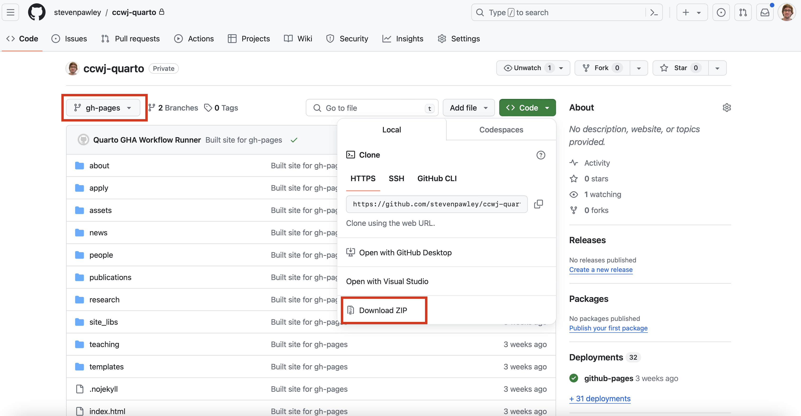
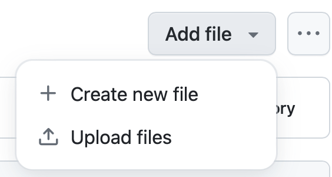

@article
- title
- year
- author
- doi
- journ
- number
- pages
- volume or number (mutually-exclusive)


The CCWJ website is based on the Quarto framework, which is a lightweight, flexible, and extensible static site generator for academic websites. The website is hosted on GitHub Pages and is automatically built and deployed using GitHub Actions.
Changes and rebuilding/rendering of the website are triggered by pushing changes to the main branch of the repository. Behind the scenes (automated by GitHub Actions), the website is built using the quarto command-line tool, which is automatically installed in the GitHub Actions environment. The website is built using the quarto site build command, which generates the website in the _site folder.
The contents of the _site folder are automatically copied to the gh-pages branch of the repository, which is used by GitHub Pages to serve the website deployed in GitHub Pages. The GitHub Pages deployment can be used to preview any changes that have been made to the website.
The website can also be deployed to any other web server that supports static sites. To deploy the website to another web server, you can download the repository content from the gh_pages branch as a Zipfile, and then upload the uncompressed folder to any other web server, e.g., the https://sites.ualberta.ca, using any method you prefer (e.g., FTP, SCP, etc.), or using a GUI tool like WinSCP etc.
This cannot be automatically performed by GitHub because the University of Alberta’s web server is only accessible from within the network.

The Quarto project makes use of document listings for the components of the website that may change on a regular basis. These components relate to the following website sections:
Templates that can be used to add new content to these sections are stored within the templates folder in the project’s root directory.
Additionally, the publications are generated dynamically from the Bibtex file that is stored as publications/references.bib. Only the ‘Articles’, ‘Proceedings’ and ‘Reports’ are generated dynamically. The books and theses are generated manually using template files because for books, each entry requires an image of the book, and for these, relatively few items are present which are easily managed.
Simple changes to the website can be made directly through the GitHub interface by creating, editing, or deleting files from the respective directories (and/or uploading new image files). For more substantial changes, it is recommended to clone the repository from GitHub and then commit the changes, but this requires familiarity with Git.
Alternatively, a complete version of this repository is also available on Posit Cloud, which is an online development environment, which can be used for editing and previewing the website content without needing to install any software. Changes to the website can be made directly in the Posit Cloud environment, and then the changes can be committed to the GitHub repository.
For all of the listing document based pages, anything in the associated .qmd files can be altered freely without causing any breaking changes to the website, but it is important the keep the header structure the same. An example of a header is:
In this example, any of the values can be updated (e.g, the name, the email address etc.), but the overall structure and field names needs to be kept the same.
The equipment items in the About > Facilities section are automatically generated from files within the about/equipment folder. Each item needs a plain text markdown file and an associated image, for example the ‘Creaform MetraScan 750 3D Scanner’ item has two files - 3DSC-creaform-metrascan-750.qmd and 3DSC-creaform-metrascan-750.jpg. You can remove any item from the equipment listing page by deleting these two files for any particular item.
To add a new equipment item through the GitHub web interface, copy the text from the templates/equipment-item-template.qmd to the clipboard, or just download the individual file from GitHub.

Then rename the template and edit the text (using any text editor, like notepad etc.) and then upload the new file to the about/equipment folder along with an image of the equipment (using the same filename that you specify in the updated version of the template file).

Similar to equipment items, CCWJ member sub pages are automatically generated from files within one of the people/phds, people/mscs, people/staff, etc. folders. Each member has a plain text markdown with their biography and an accompanying image file. To add new members, the examples in the templates/ccwj-member-about-page.qmd can be used as a starting point. This file can be downloaded, renamed and edited in a text editor, and uploaded along with a portrait photo to the appropriate people/staff(phds, mscs, bscs, alumn, alumn-ug, alumn-vistors) subdirectory.
The research projects are also listing documents. An entry for a new project can use the templates/project-template.qmd as a starting point. The projects page displays the logo of the granting organization. Images for these are found in the research/projects/granting-logos directory, so unless the granting organization is new, these images can be reused for new projects.
For seminars and/or conferences that were recorded, new items can be added to the Research > Talks page by using the templates/talks-template.qmd. In addition to updating the required fields, this file needs to be altered depending on where the video is stored - either on YouTube or in Google Drive, which changes how the video is embedded. Instructions are provided in the template and you can delete the other embedding method. Each talk also needs an image to show in the listing page. This image can just be a screenshot of the recording, or the opening slide etc.
The teaching page uses the document listing mechanism for each individual course. Any course files in the teaching/courses directory will automatically be added to the teaching page. A template for a course page is included in the templates/course-template.qmd file. Anything in the template can be changed when creating a new course, but the header structure needs to remain the same. The current template is structured as:
Any of these sections can be removed if desired.
Each course .qmd document needs to have an associated image that appears on the teaching page.
A template for a new news item is present in templates/news-article-template.qmd. Because most news items are going to link to some external site, it is not necessary to also upload an image, rather, the image shown in each news article is just a hyperlink to an image on an external site. However, this can be replaced with an manually uploaded image, if desired.
The publications listings are automatically regenerated from the bibtex files in the “/publications” folder. These bibtex files have to be exported as *plain bibtex”, not using other extensions like “Better Bibtex”. This is because these extensions insert lots of special escaping characters, for example, double curly braces, that prevent software from changing the case of the titles and authors. These extensions also escape special characters like accents. However, the code in this repository reads the bibtex files ‘as-is’, so it is important to export them as plain bibtex.
Some entries contained missing items, particularly DOIs, which have been completed in the repository version of the publications/references.bib. To add new publications, you can download this file, add new entries to it, and upload it back to the same location (overwriting the file). Alternatively, a new Bibtex file can exported from some other reference manager such as Zotero or Refworks, assuming that the citations are complete.
Entry ‘@’ tags that are used in the site are: article, inproceedings, techreport, phdthesis, mastersthesis.
The only publication type that is not created automatically from the bibtex file relates to book articles, because this page also uses an image of book. To add an additional book publication, add a new plain text file using the following header into the publications/publications-books folder along with an accompanying photo:
---
title: "Asymptotics and blending in the modeling of welding"
author: "Wang, Ying, Lu, Yi, Grams, Mitchell, Cesaro, Alejandro Hintze, Mendez, Patricio F."
year: 2018
booktitle: "Mathematical modelling of weld phenomena 12"
pages: "NA"
publisher: "NA"
image: "mathematical-modelling-of-weld-phenomena-12.jpeg"
---The build folder contains python scripts that were used to originally pull student and equipment information from the google sheets documents used in the original site. The files are kept for completeness, but are not used directly by the website.
All of the website rebuilds automatically in GitHub. One exception is the publication/citation index in the ‘What we do’ page. These numbers get pulled from Google Scholar, but google blocks automated attempts from some URLs. To re-render this page, it is best to do it locally by cloning the repository and running quarto render about/what-we-do.qmd (assuming that Quarto is installed on the system).